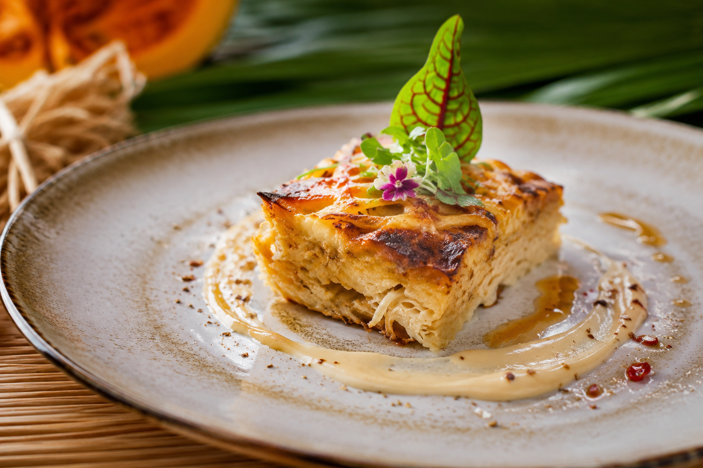

Le Gratin de couac
Le gratin de couac est le plat réconfortant par excellence de la table guyanaise. Il met à l'honneur le couac, une semoule de manioc torréfiée à la texture granuleuse, véritable couteau suisse de l'alimentation locale.
Pour cette recette, la semoule est réhydratée puis liée à une béchamel onctueuse, parfois agrémentée de petits morceaux de lardons ou de boucané, avant d'être généreusement parsemée de fromage et dorée au four. C'est l'accompagnement idéal pour contraster avec le piment et le jus des ragoûts.
L'histoire et le secret du Couac
Le couac (ou « kwak ») est un héritage direct des savoir-faire amérindiens transmis aux populations créoles et bushinenguées. Fabriqué à partir du manioc amer, sa confection exige un travail long et rigoureux : les racines sont râpées, macérées dans l'eau, puis glissées dans une longue vannerie tressée appelée “couleuvre” pour en extraire le jus toxique. La pulpe restante est ensuite séchée et torréfiée sur une grande plaque métallique appelée “plat à couac”.
Le secret absolu d'un bon gratin réside dans l'étape cruciale de la réhydratation du couac. Si on verse trop de liquide d'un coup, la semoule devient pâteuse ; pas assez, elle reste dure sous la dent. Les cuisinières guyanaises mouillent le couac progressivement avec un bouillon chaud aromatisé (souvent un bouillon de volaille ou de légumes) pour lui permettre de gonfler tout en gardant ses grains bien détachés.
Le second secret consiste à incorporer une béchamel ou une crème riche, bien relevée en poivre, ail et noix de muscade. La douceur de la crème s'infiltre entre les grains de manioc grillés, créant un équilibre parfait entre l'onctuosité de l'intérieur et le croustillant de la croûte gratinée.
Incontournable des fêtes de fin d'année et des repas de famille, le gratin de couac accompagne magnifiquement le poulet boucané, le ragoût de cochon-bois ou un poisson grillé.